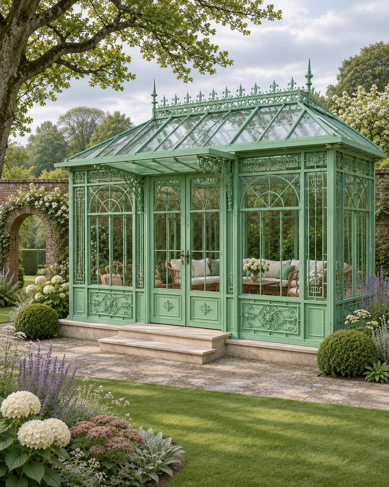
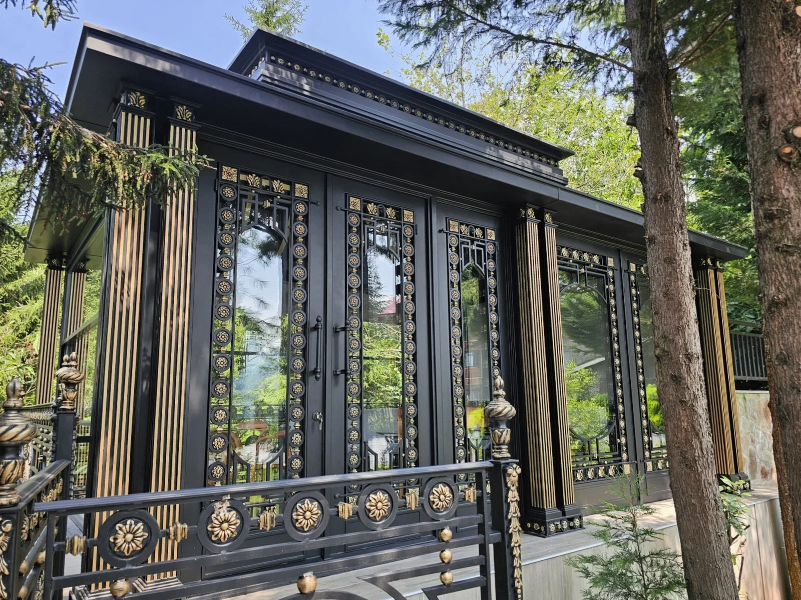

Arched glazing
Pointed or rounded forms can establish the character of an elevation. Review the balance of decorative work and clear glass in the context of your home.

Character in every line
Completed project
Marla Garden · London
A classical conservatory carries its character in the proportions: the height of an arch, the rhythm of the glazing and the line of the roof. Explore curved and Gothic-inspired designs, with decorative details that connect the structure to its setting.
Our collection includes pointed arches, rounded bays, ornamental cresting and finely divided glazing. Compare these features in the project photographs before choosing a direction. A period-inspired appearance and a construction specification are separate decisions: frame material, finish and glazing are established for the individual project.
Pointed or rounded forms can establish the character of an elevation. Review the balance of decorative work and clear glass in the context of your home.
Curved roofs, pitched forms and ornamental roof details create different silhouettes. Their scale should follow the proportions of the structure.
The frame finish should be considered alongside existing masonry, planting and the way daylight changes across the site.
Victorian-inspired and Gothic-inspired describe a design direction. The actual frame material, glazing and finish are confirmed separately as part of the specification.
Explore the collection
Compare roof forms, glazing patterns and the relationship to the garden. Open a design to explore its details and reference views.
 Classical Garden Pavilions
Classical Garden PavilionsDesign collection
Pale frames and repeated arched glazing give these pitched-roof pavilions a classical garden character. Steps and a defined entrance create a clear approach through the planting.
Explore the design
Classical Garden PavilionsDesign collection
Green glazing bars, a raised roofline and ornamental details establish a recognisable garden pavilion form. The frame reads differently against summer planting, masonry and open sky.
Explore the design Classical Garden Pavilions
Classical Garden PavilionsDesign collection
A dark frame outlines a glazed pavilion with a pronounced roof form and arched window details. The entrance and glazing pattern create an architectural focal point in the garden.
Explore the design Curved Conservatories
Curved ConservatoriesDesign collection
A continuous curved glazed roof sits above a dark rectangular conservatory. Tall window divisions and decorative upper panels give the long elevation an ordered rhythm.
Explore the design Curved Conservatories
Curved ConservatoriesDesign collection
A pale conservatory beneath a continuous curved roof. Repeated arched panels and a raised entrance give the broad glazed frontage a classical character.
Explore the design Curved Conservatories
Curved ConservatoriesDesign collection
A generous pale glazed garden structure with repeated tall arches and a broad curved roof. The references place the building within an open lawn and planted borders.
Explore the designLook closer
ClassicA dark conservatory with tall pointed arches, intricate metalwork and a raised glazed entrance roof.
Explore project Classic
ClassicA green conservatory with a sweeping curved façade, tall glazed panels and ornamental roof cresting.
Explore project
ClassicA black garden salon with gold ornamental metalwork, decorative railings and a curved interior ceiling.
Explore projectDevelop your project
Compare garden structure designs and bring your preferred references to the design discussion.
Our conservatory cost guide explains the decisions that shape a quotation.
Read the London conservatory planning guide for the questions to check for your site.
Share the setting and your preferred direction to discuss your garden project.
Planning your space
A design style and a material specification are separate decisions. We discuss the visual direction first, then establish the appropriate proposed construction and finish for the project.
Explore the arched and curved conservatory projects, where the photographs and project film show the glazing patterns, rooflines and decorative elements in more detail.
Your next space
Share the setting, the way you want to use the space and the designs you are drawn to.
Plan your project